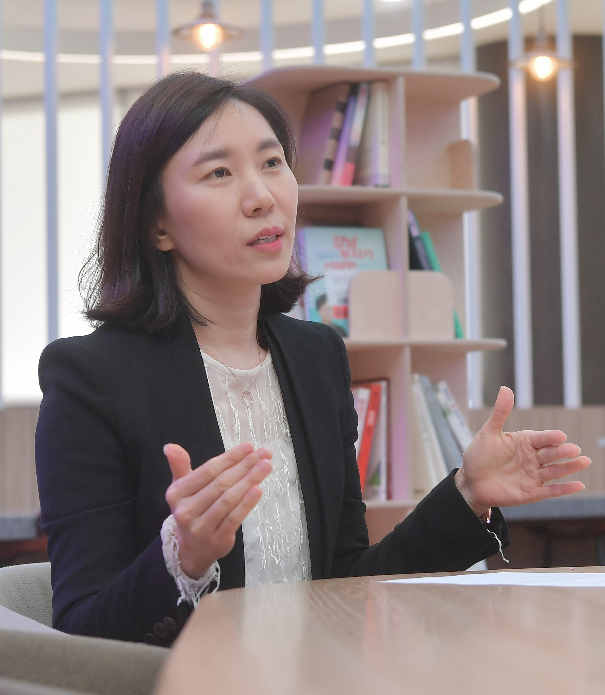

Hyun Sook Yi
Professor, Konkuk University
Ph.D. in Educational Measurement and Statistics
이현숙 교수
- 건국대학교 교수
- 사범대학 교직과 교수
- 일반대학원 교육학과 심리측정통계 전공 주임교수
- 교육대학원 교육학과 교육데이터컨설팅전공 주임교수
- 한국교육평가학회 이사
- 한국심리측정평가학회 이사
- 학술지 <교육평가연구> 편집위원
주요 관심 분야
- 구조방정식모형
- 인지진단모형
- 심리검사개발
- 교육데이터마이닝 등

Lab
상허연구관 505호

Tel
02) 450 - 4148

E-mail
hyunsyi@konkuk.ac.kr

HomePage
www.psychomet.net
학력
박사학위
2000 ~ 2005
- 미국 University of Iowa 졸업
(Ph.D. in Measurement and Statistics)- 학위논문 : A Method for Estimating Classification Consistency of Alternate Forms Under Equating Situations
석사학위
1998 ~ 2000
- 서울대학교 대학원 과학교육과 졸업 (M.Ed. in Science Education)
학사학위
1992 ~ 1996
- 서울대학교 지구과학교육과 졸업 (B.S. in Earth Science Education)
연구 및 학술활동
현재 수행중인 연구
- Dynamic topic modeling을 이용한 학습분석학 연구 동향 분석
- 학습자 특성의 진단과 예측을 위한 머신러닝 및 데이터 마이닝 기법에 관한 이론적, 실증적 고찰
- 국가수준 디지털 리터러시 검사 개발 및 수준 측정 연구
학술지 게재 논문
- Yi, H. S. & Na, W. (2020). How are maths-anxious students identified and what are the key predictors of maths anxiety? Insights gained from PISA results for Korean adolescents. Asia Pacific Journal of Education, 40(2), 247-262.
- 이창묵, 이현숙, 나우열 (2020). 순환신경망(RNN)을 활용한 개별 학생 학업성취도의 종단적 예측. 교육평가연구, 33(1), 161-189.
- 박세진, 이현숙, 김한성 (2019). 인지진단이론을 적용한 디지털 리터러시 검사 분석 방안 탐색. 교육정보미디어연구, 25(2), 373-402.
- 이유리, 이현숙 (2019). Bifactor 모형의 잠재평균 분석에 대한 부분 절편동일성 수준의 영향. 교육평가연구, 32(1), 81-106.
- 이현숙, 나우열(2018). 형성적 측정구조에 기반한 교직 스트레스 검사 개발 및 타당화: PLS-SEM과 CB-SEM 적용. 교육평가연구, 31(4), 885-911.
- 나우열, 이현숙(2018). 영과잉 가산자료의 분포 특성을 고려한 포아송 및 음이항 성장모형 및 잠재계층성장모형 비교: 청소년 가출빈도의 종단적 변화 분석을 중심으로. 교육평가연구,31(4), 913-939.
- 박세진, 이현숙 (2018). 인지진단이론의 학교현장 적용 가능성 탐색: 모수 및 비모수적 접근 방법의 비교. 교육평가연구, 31(1), 225-254.
- 박세진, 이현숙 (2017). DINA와 DINO 모형의 문항 모수 및 피험자 모수 추정 정확성에 영향을 주는 요인 탐색. 교육평가연구, 30(3), 415-444.
- 이현숙 (2017). 계층적 성분모형을 적용한 수학 불안 검사의 타당화. 교육평가연구, 30(2), 245-267.
- 이환철, 김형원, 이지혜, 이현숙, 고호경 (2017). 수학학습 정의적 영역 검사 도구 개발 연구. 대한수학교육학회지 <학교수학>, 19(2), 267-287.
- 이환철, 김형원, 백승근, 고호경, 이현숙 (2017). 수학학습 정의적 영역에 대한 인과 모형 분석, 한국수학교육학회지 시리즈 E <수학교육논문집>, 31(2), 187-201.
- Yi, H. S. & Lee, Y. (2017). A latent profile analysis and structural equation modeling of the instructional quality of mathematics classrooms based on the PISA 2012 results of Korea and Singapore. Asia Pacific Education Review, 18(1), 23-39.
- 임해미, 이현숙, 김성숙(2016). 우리나라, 싱가포르, 일본, 핀란드의 PISA 2012 수학 성취와 교육맥락변인의 구조적 관계 분석. 교과교육학연구, 20(2), 97-110.
- 박세진, 이현숙(2015). 초등학생의 학업성취도를 예측하는 학생수준 및 학교수준 변인에 대한 다층 구조방정식모형 분석. 교육평가연구, 28(3), 499-522.
- 이현숙, 이창묵(2015). TIMSS 수학 성취 상위국 학생들의 수학 흥미와 자신감 비교를 위한 정렬 최적화 방법의 적용. 교육평가연구, 28(2), 313-337.
- 이현숙, 김신영, 김용련(2015). 학업 우수 학생들과 부진 학생들을 대상으로 한 학업성취의 종단적 변화. 교육평가연구, 28(1), 181-207.
- 이현숙, 송미영(2015). PISA 2012 수학 성취도를 설명하는 학생의 정의적 특성 및 교사 특성 분석을 위한 다층 구조방정식모형의 적용. 교과교육학연구, 19(1), 1-22.
- 이현숙, 고호경 (2014). 인지진단모형을 적용한 TIMSS 8학년 수학 기하 영역의 성차 분석. 대한수학교육학회지 <학교수학>, 16(2), 387-407.
- 이현숙, 신진아, 김경희 (2013). 다층 구조방정식모형을 활용한 교육 맥락변인과 학업성취도의 관계 분석. 교육평가연구, 26(2), 477-506.
- 이현숙, 김성훈 (2013). Effects of Relaxed Statistical Assumptions for Anchor Test Construction and Non-equivalence of Proficiency Distributions on Equating Accuracy. 교육평가연구, 26(1), 247-273.
- 이현숙, 조정순, 이유리 (2012). 영어 학업성취도를 설명하는 학생 및 학교수준 변인 탐색. 교육과정평가연구, 15(13), 179-206.
- 송미영, 이현숙 (2012). 학업성장 정보 산출을 위한 수직척도 활용 방안 고찰. 교육과정평가연구, 15(3), 251-276.
- 조정순, 이현숙 (2012). 원어민보조교사가 영어학습에 미치는 영향: 서울지역 초중등학생의 경우. 영어학, 12(3), 545-565.
- 고호경, 이현숙 (2012). 중고등학생의 배경 변인에 따른 요인별 수학 불안의 차이. 한국학교수학회논문집, 15(3), 487-509.
- 이현숙 (2012). 혼합형 검사의 문항 유형별 가중치에 따른 신뢰도 및 다변량 일반화가능도 분석. 교육평가연구, 25(1), 95-116.
- 송미영, 김성숙, 김준엽, 이현숙 (2011). 학교교육 개선을 위한 학생의 학업성취수준 결정요인 분석. 교육평가연구, 24(2), 261-289.
- Ko, H. K. & Yi, H. S. (2011). Development and validation of a mathematics anxiety scale for students. Asia Pacific Education Review, DOI:1007/s12564-011-9150-4.
- 김성숙, 송미영, 김준엽, 이현숙(2011). 국가수준 학업성취도 평가 결과의 지역간 학력 차이에 따른 초중고 학교특성 분석, 교육평가연구, 24(1), 51-72.
- 김준엽, 김성숙, 송미영, 이현숙(2011). 학교별 연간 성취수준 향상에 기초한 수행지수 산출 및 학교특성 비교. 교육평가연구, 24(1), 149-173.
저서 및 역서

- 이현숙, 장승민, 신혜숙, 김수진, 전경희 (2019). 구조방정식모형: 원리와 적용. 학지사. [역서]
- 김성훈, 이현숙 (2016). 수업중심 교육평가. 학지사.[역서]
- 한국교육평가학회 (2015). 교육측정. 학지사.[역서]
- 곽덕주, 양성관, 이지현, 이현숙, 장경윤, 조덕주, 황종배(2011). 지식사회와 학교교육 - 불안정한 시대의 교육. 학지사.[역서]
Workshop
- 2020년 7월. <Random Forests 기법을 이용한 예측 및 분류>. 한국교육평가학회 학문후속세대 양성을 위한 여름학교 특강.
- 2019년 8월. <Mplus를 이용한 구조방정식모형>. 연세대학교 하계 연구방법론 워크샵.
- 2019년 7월. <미래교육의 비전을 바탕으로 조명한 과정중심평가의 방향과 과제>. 한국과학교육학회 학술대회 기조강연.
- 2018년 8월. <AMOS를 활용한 집단비교 모형 분석: 다집단분석과 잠재평균분석>. (주)데이터솔루션 통계분석 워크샵.
- 2018년 2월. <인지진단모형>. 고려대학교 교육연구소 통계 워크샵.
- 2017년 12월. <AMOS를 활용한 집단비교 모형 분석: 다집단분석과 잠재평균분석>. (주)데이터솔루션 통계분석 워크샵.
- 2017년 12월. <구조방정식모형 분석의 기본 개념 및 활용>. 한국심리측정평가학회 연구방법론 기초학교 워크샵.
- 2017년 7월. <AMOS를 활용한 집단비교 모형 분석: 다중집단분석과 잠재평균분석>. (주) 데이터솔루션 통계분석 워크샵.
- 2017년 6월. <구조방정식모형 분석의 기초와 응용>. 연세대학교 교육연구소 통계 워크샵.
- 2017년 2월. <구조방정식모형을 이용한 종단 분석>. 서울대학교 교육연구소 통계 워크샵.
- 2016년 11월. <심리학 연구에서 인지진단모형의 적용>. 한국심리측정평가학회 Step-by-Step 튜토리얼 특강.
- 2016년 6월. <수업혁신을 위한 교실평가>. 세종 교육과정혁신 리더교원 양성과정 특강.
- 2016년 6월. <2016 초등 성장을 지원하는 평가 직무연수>. 세종시 교육연구원 직무연수 특강.
- 2016년 6월. <심리검사의 개발 및 타당화>. 한국측정평가심리학회 2016 연구방법론 기초학교 특강.
- 2016년 6월. <구조방정식모형의 원리와 응용> 서울대학교 교육연구소 하계 교육연구방법론 워크샵.
- 2016년 7월. <Amos를 활용한 집단 비교 모형 분석>. (주) 데이터솔루션 Amos day 2016 연계교육 워크샵.
- 2016년 5월. <Amos를 이용한 다집단 분석과 조절효과 분석>. (주) 데이터솔루션 2016 Amos Day 특강.
- 2016년 4월. <수업 혁신을 위한 교실 평가의 재조명>. 새로운 학교 경기 네트워크 특강.
- 2016년 2월. <구조방정식모형 기초>. 고려대학교 교육문제연구소 워크샵.